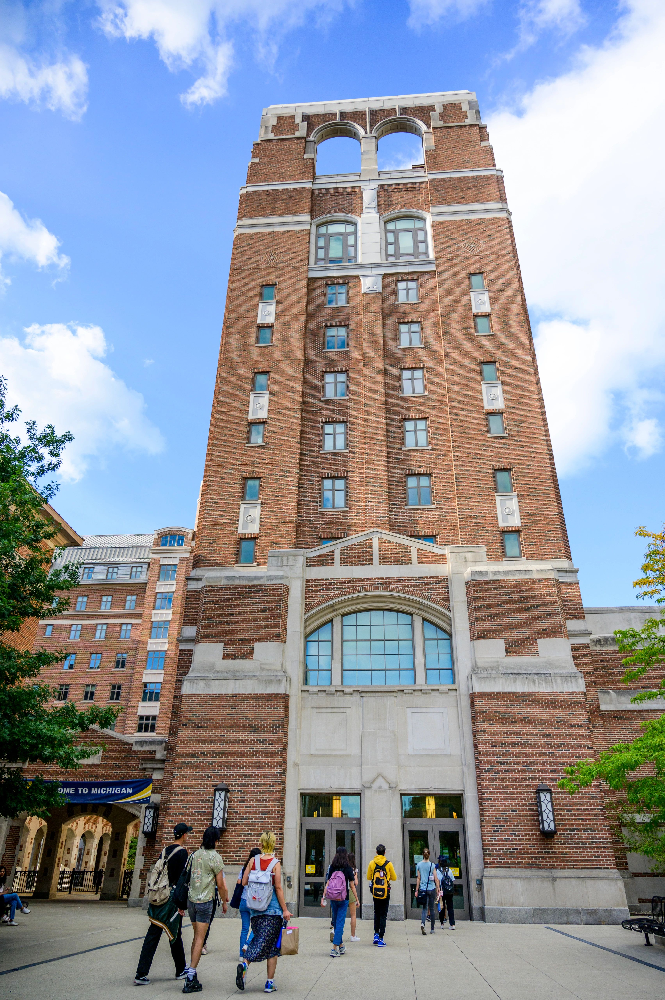

Academic Support at UMSI
Academic Success and Tutoring
The UMSI Academic Success Team, as part of the Academic Programs & Student Life Team, works to holistically support students, both academically and personally. The Academic Success team oversees UMSI tutoring and academic skill-building programs, in addition to supporting students in navigating their time at UMSI.
Schedule an Academic Success Meeting
Schedule a meeting with an Academic Success team member via Navigate360.
- Shannon Gass, Assistant Director of Student Success
- KC Pepera, Student Support Manager
Not sure whether you should connect with Shannon or KC about your concern? Check out the section below titled "Meet the Academic Success Team" to review Shannon and KC's areas of support.
Connect with a UMSI Tutor
Check out the UMSI Tutoring Website for access to the following:
- UMSI Programming Tutoring (Free)
- UMSI Math Tutoring (Free)
- Peer-to-Peer Tutoring Directory
Additional Questions
Do you have questions about any of the following items?
- Additional Academic Resources (check out the Student Support Resources page)
- Emergency Funding
- Accommodations
- Connecting with UM or Community Resources
Contact the Academic Success team via email at umsi.academicsuccess@umich.edu
Meet the Academic Success Team!

Shannon Gass
Assistant Director of Academic Success
Pronouns: She/Her/Hers
Support Focus Areas:
- Tutoring
- Academic Standing
- Academic Success Skills
- Student Concerns
- Academic Accommodations & Working with SSD

KC Pepera
Student Support Manager
Pronouns: She/Her/Hers
Support Focus Areas:
- Student Well-Being
- Emergency Funding Options
- Response to Care Report
- Connections to UM & Community Resources
Success Coaching Drop-ins
Connect with the Academic Success Team during Success Coaching Drop-Ins!
These sessions are intended to help support students with time management, study skills, connection to campus resources, and topics related to academic success.
Virtual Drop-Ins will be available on Thursdays from 10:00am - 11:00am ET.